Presupuestá, planificá y controlá una obra con los análisis de SIBRATECH
PresupuestApp arma el presupuesto a partir de análisis unitarios reales, saca la lista de compras, propone el plan de trabajo y mide la obra contra ese plan. Es de uso libre y no hay que registrarse. Este manual recorre una obra de ejemplo —una vivienda de once tareas— de punta a punta.
- 1Cómputo
- 2Presupuesto
- 3Precios
- 4Materiales
- 5Plan de trabajo
- 6Control de obra
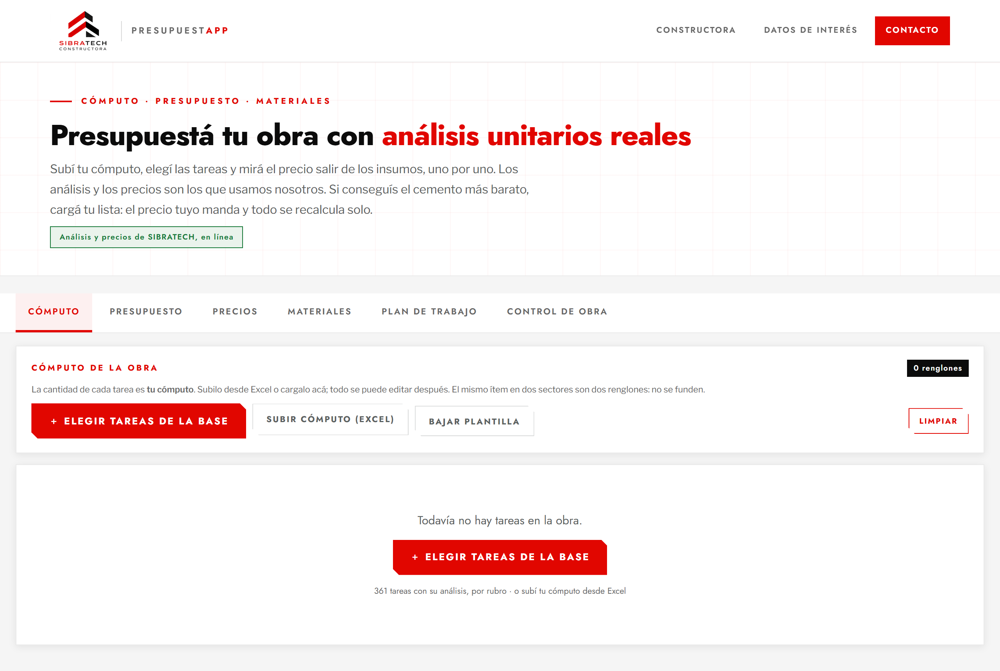
Lo que cargás queda guardado en tu navegador: si cerrás la pestaña y volvés, está todo como lo dejaste. Para llevarlo a otra computadora o guardarlo de verdad, bajá el proyecto (paso 9).
Cargar las tareas de la obra
La cantidad de cada tarea es tu cómputo. Hay dos formas de cargarlo: elegir las tareas de la base de SIBRATECH, o subir tu cómputo desde un Excel.
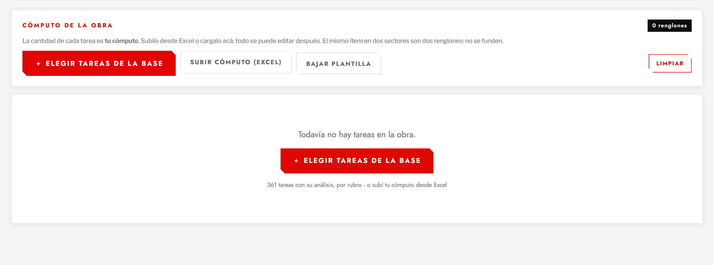
Recorrer la base por rubro
Al abrir la base aparece el índice: los rubros de obra en su orden (02 Movimiento de suelos, 04 Fundaciones, 05 Estructuras…) y, dentro de cada uno, sus subrubros con la cantidad de tareas. Tocá un subrubro para ver sus tareas con el precio por unidad.
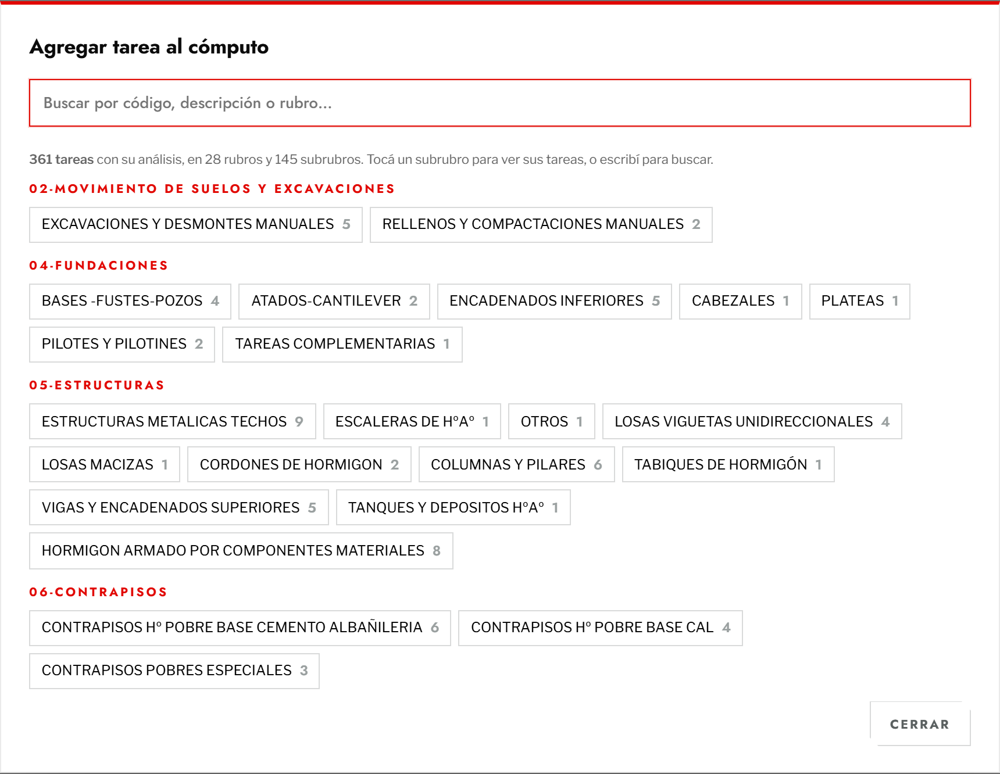
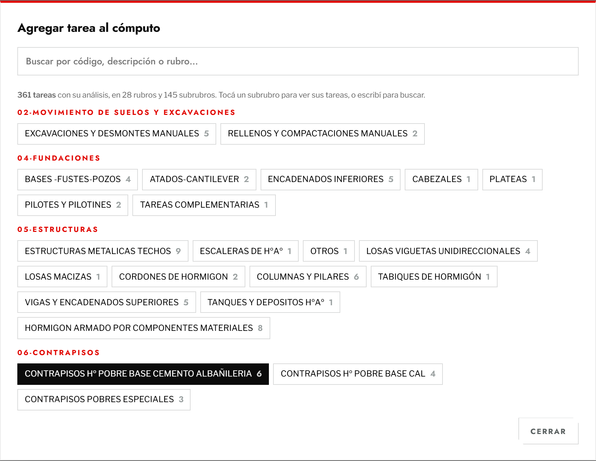
O buscar por nombre
Escribiendo al menos tres letras se busca por código, descripción, rubro o subrubro. Los resultados muestran el rubro y el subrubro en dos columnas.
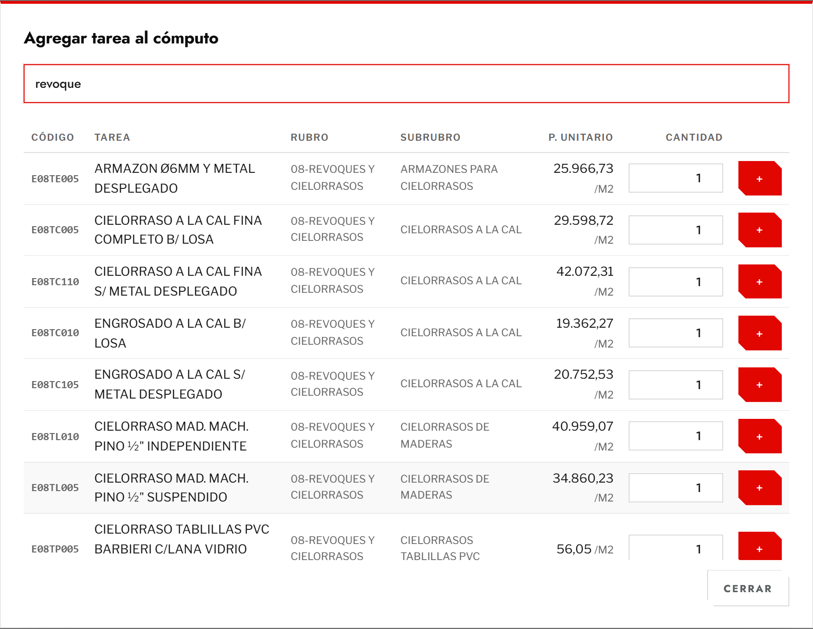
La grilla del cómputo
Cada tarea es un renglón. La cantidad y el sector se editan ahí mismo, y el costo se recalcula mientras escribís. La misma tarea en dos sectores —planta baja y planta alta— son dos renglones: no se funden.
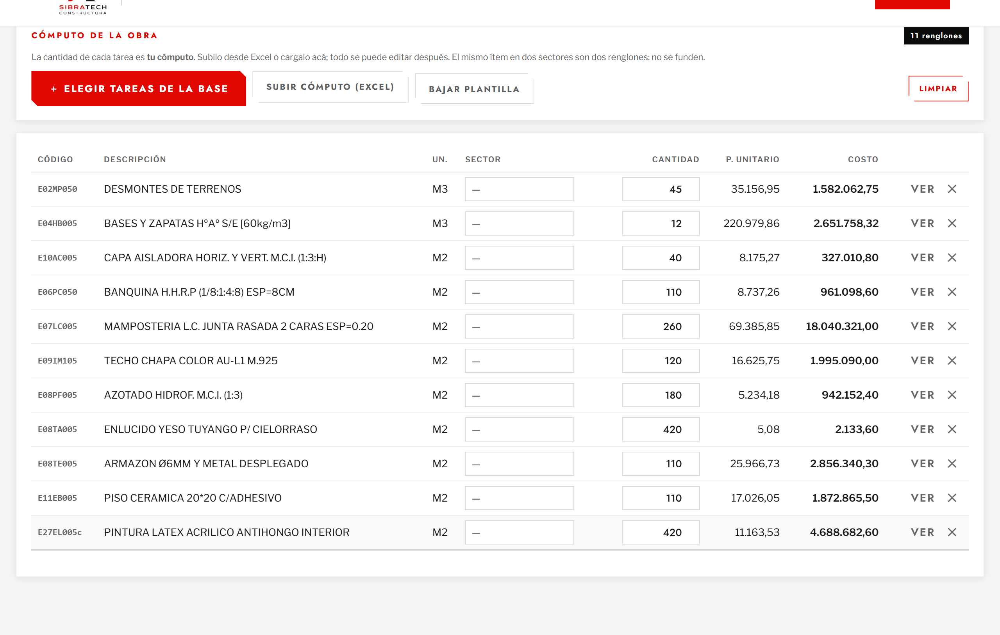
Si subís un Excel, la app te pregunta qué columna es cada cosa (código, cantidad, sector) y reconoce solas las más comunes. Las tareas con un código que no está en la base quedan marcadas y se les puede poner un precio a mano.
De dónde sale cada precio
El botón Ver muestra la receta de la tarea: qué insumos lleva y cuánto de cada uno por unidad. Los rendimientos van con cuatro decimales, porque en una receta los números chicos importan: 0,0524 m³ de arena por m² no es lo mismo que 0,05.
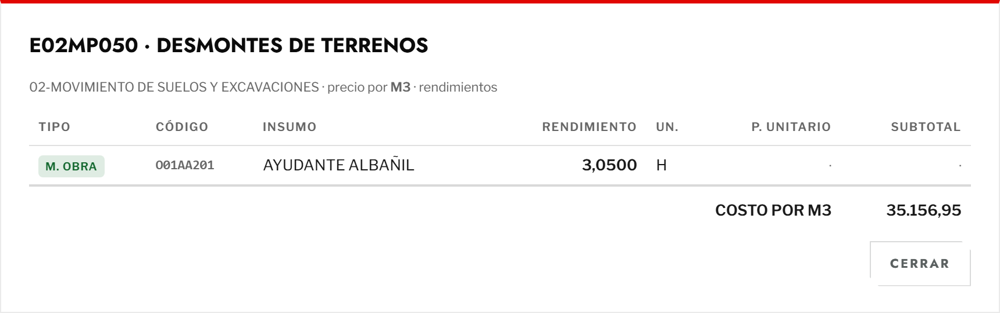
Del costo al precio: el K y el IVA
La pestaña Presupuesto junta el cómputo por rubro y lleva el costo al precio con el coeficiente K. El K va sin IVA: el IVA se calcula al final, sobre el costo por K.
El K puede ser aditivo (1 + 12% + 10%…) o en cascada (1,12 × 1,10…). Todo se recalcula al cambiar cualquier porcentaje.
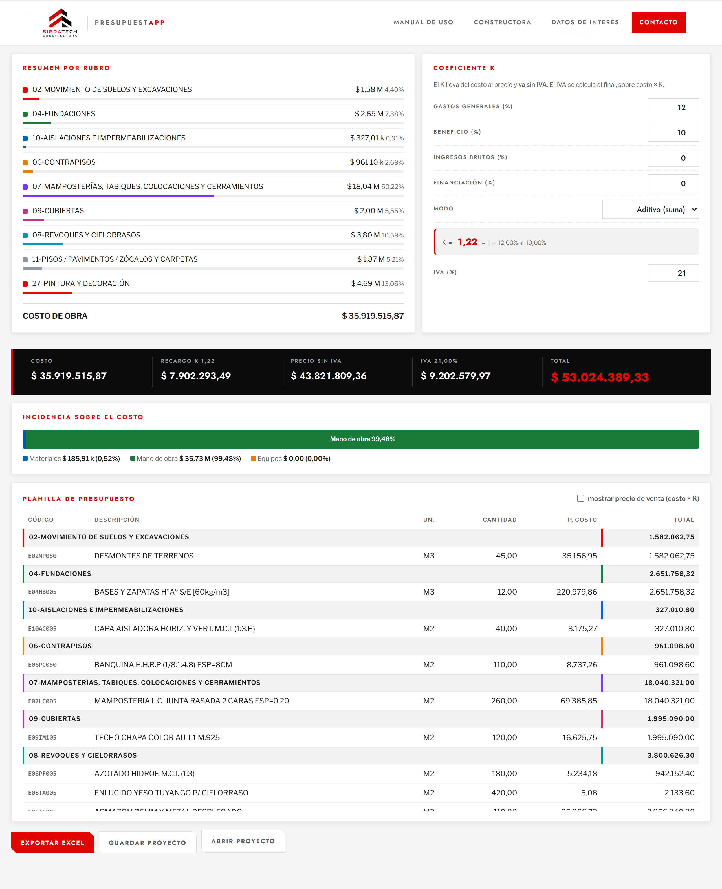
Para mandarle el presupuesto al cliente, tildá mostrar precio de venta y la planilla pasa a precio × K. Exportar Excel baja el presupuesto, el cómputo y los insumos con los mismos números de la pantalla.
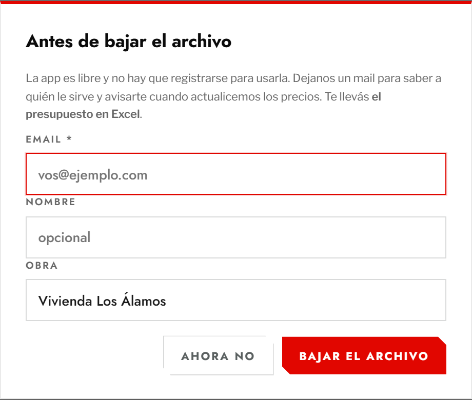
Si conseguís el cemento más barato, el tuyo manda
Los precios de SIBRATECH son el punto de partida. En la pestaña Precios, con el buscador vacío, aparecen los insumos que usa tu obra: escribí tu precio en la columna Mi precio y todos los análisis se recalculan solos.
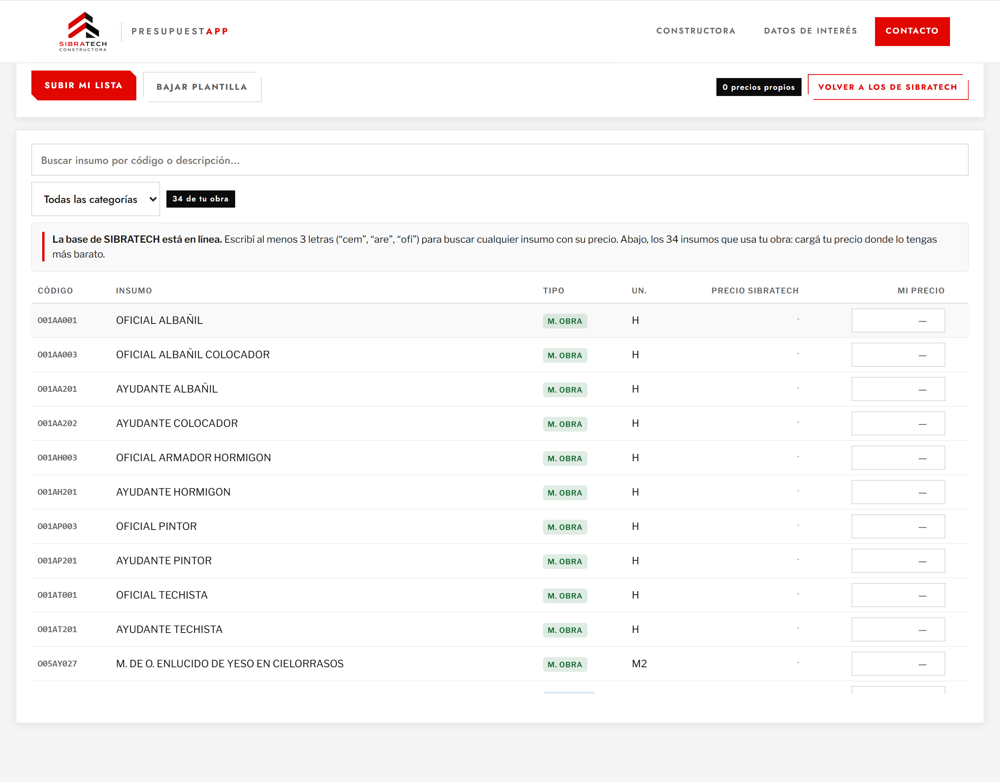
Escribiendo tres letras se busca en toda la base, con el precio de SIBRATECH al lado para comparar.
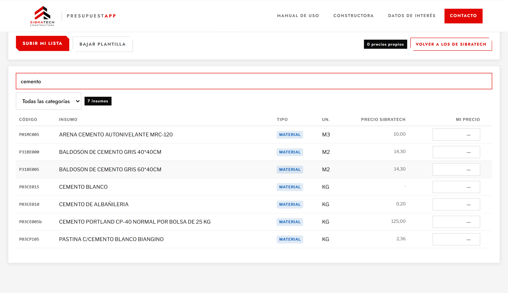
El precio va por unidad de compra y sin IVA: la bolsa de cemento, el tacho de hidrófugo. Es como pasa el precio el corralón. La app hace la cuenta a la unidad de obra (el kilo) sola.
También podés subir tu lista entera desde un Excel con Subir mi lista, y volver a los precios de la base con Volver a los de SIBRATECH.
La lista de compras de la obra
Materiales multiplica el rendimiento de cada insumo por tu cómputo y lo junta en una sola lista. La columna Pedir ya está en unidad de compra y redondeada para arriba: nadie pide 345 kilos de cemento, se piden 14 bolsas.
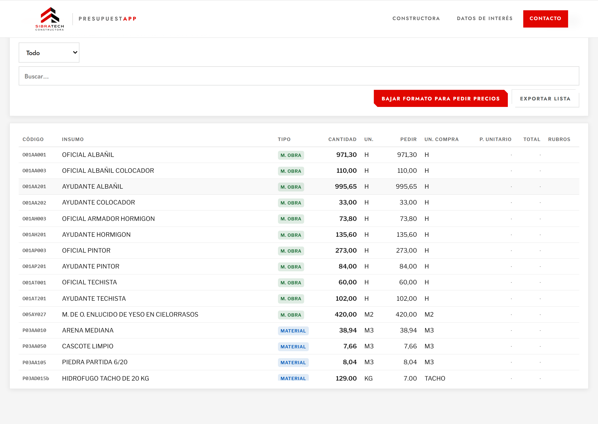
Bajar formato para pedir precios arma un Excel sólo con los insumos de esta obra, para mandárselo al corralón. Cuando lo devuelven con los precios, se sube en la pestaña Precios.
El plan sale solo, y se corrige lo que no cuadre
Hay dos caminos. Calculado: cada tarea tiene un rendimiento diario y va después de otras, y las fechas salen solas con la ruta crítica. Gantt rápido: no se declaran dependencias, se escribe a mano cuánto avanza cada tarea en cada mes.
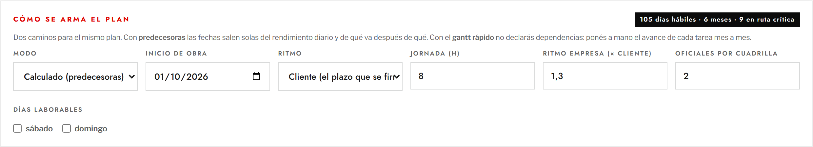
La duración no hay que cargarla
Las horas de mano de obra ya están en cada análisis. La cuadrilla es dos oficiales y un ayudante, y el ritmo lo marca el oficial, porque ayudantes siempre hay de más:
Es un valor propuesto: aparece en gris en la columna Rend. diario. Si en tu obra rinde otra cosa, escribilo y el tuyo manda.
Dos planes: el del cliente y el de la empresa
El plan que se firma con el cliente y el plan con el que trabaja la empresa no son el mismo. La empresa se arma un ritmo más rápido para tener colchón: si algo se atrasa, todavía llega al plazo del contrato. Por eso la app programa la obra dos veces.
El factor Ritmo empresa (× cliente) está en la configuración del plan y viene en 1,30: la empresa se propone hacer un 30% más por día. La tabla muestra el rendimiento del ritmo que elegiste arriba; el otro se calcula con ese factor. Si en una tarea querés otro valor para la empresa, elegí el ritmo Empresa y escribilo.
Los feriados
Los días que no se trabajan salen del plazo. Los nacionales se calculan solos —Carnaval y Viernes Santo incluidos, y los trasladables movidos al lunes como manda la ley—. Los puentes turísticos salen por decreto cada año, y los provinciales, municipales y los de la obra se cargan en Ver / editar.
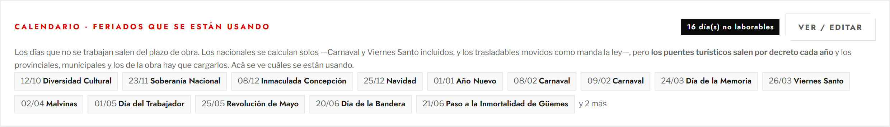
Armar el plan solo
Armar el plan solo ordena la obra por rubro: primero se excava, después se funda, la capa aisladora va sobre el cimiento, recién ahí la pared, y la pintura al final. Cada tarea queda atada a las que tiene que esperar.
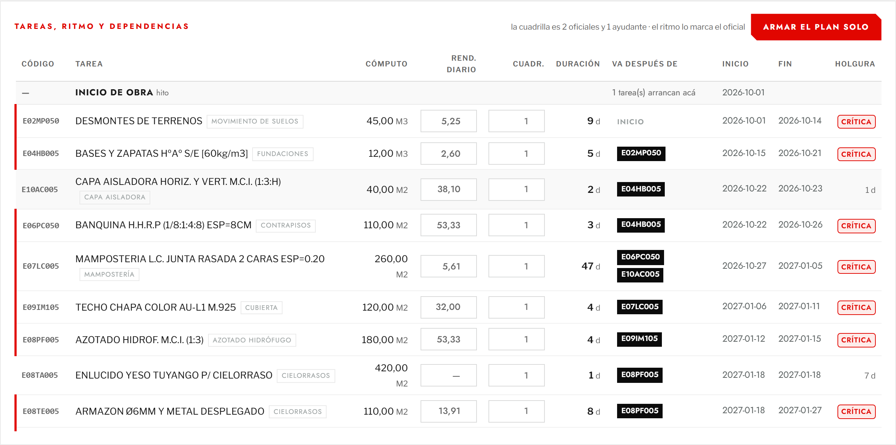
Para cambiar de qué depende una tarea, tocá la celda Va después de: se abre la lista de tareas de la obra, que se filtra escribiendo. Las que armarían un círculo quedan deshabilitadas.
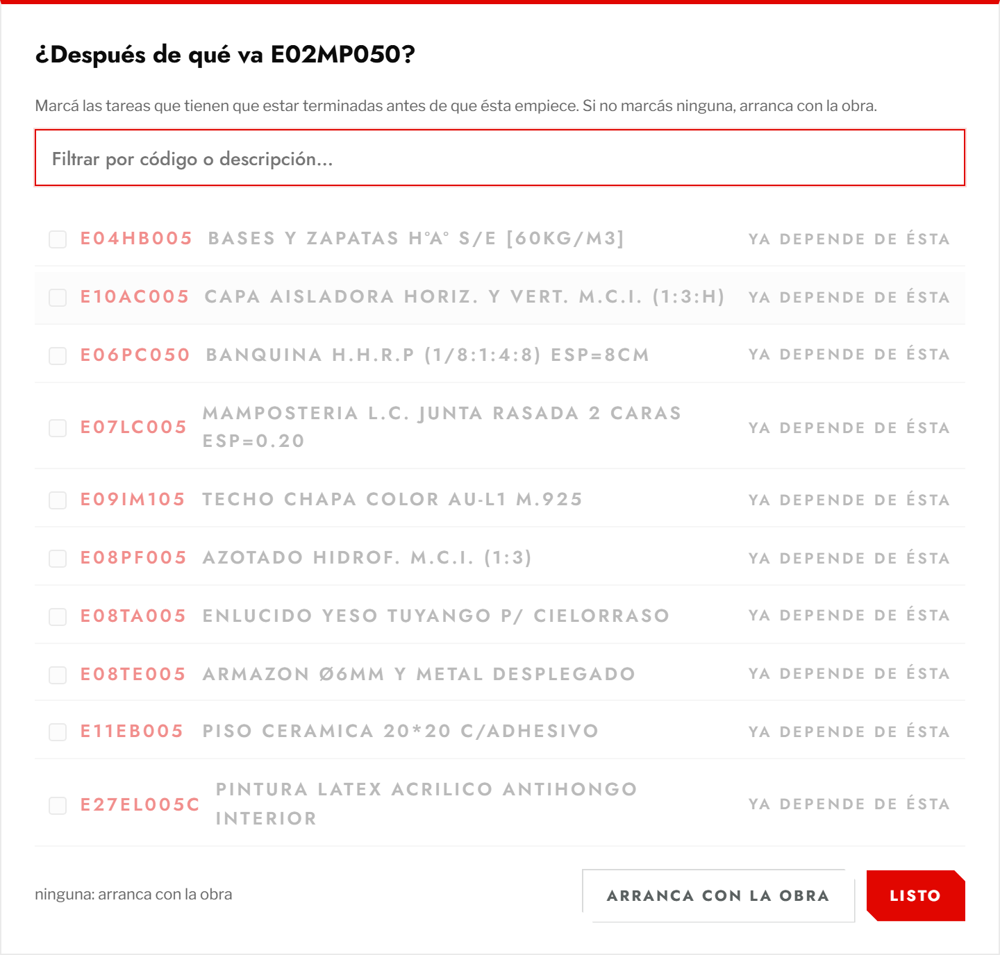
Toda tarea va después de alguna y antes de alguna: sólo la primera cuelga del inicio y sólo la última llega al fin. Las sueltas se marcan, porque arrancan todas el primer día y dejan el plazo más corto de lo que es.
Gantt por mes, look ahead por semana
El Gantt reparte cada tarea en los meses que ocupa, por días hábiles. En rojo, la ruta crítica; abajo, cuánto de la obra cae en cada mes.
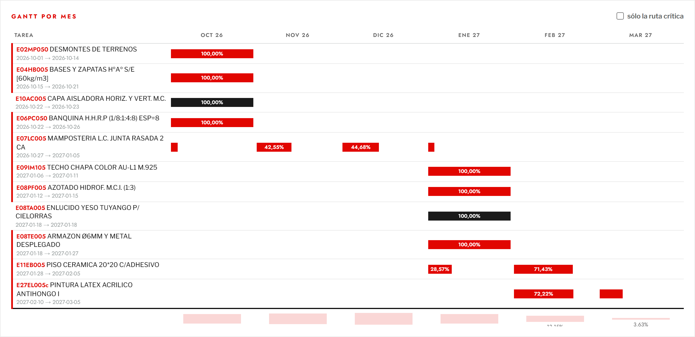
El look ahead abre las próximas semanas en días hábiles por tarea: es lo que se mira en la reunión de obra de los lunes.
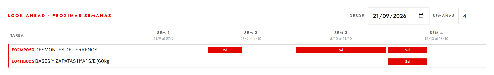
Y materiales por mes abre la lista de compras en el tiempo. El pedido se redondea en cada mes: si en marzo hacen falta 26 kg de cemento y en abril 30, son dos bolsas y dos bolsas.
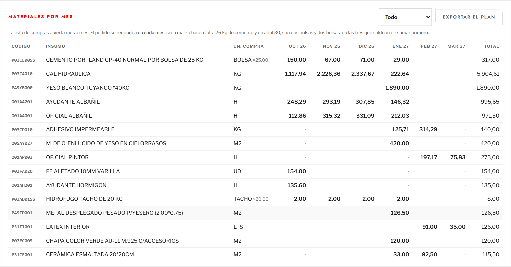
Cómo viene la obra, tarea por tarea
Todo se mide a un día, la fecha de corte. Cada corte guarda el avance de cada tarea a esa fecha, y quedan todos. Un corte nuevo arranca con los avances del anterior, así sólo cambiás lo que se movió.
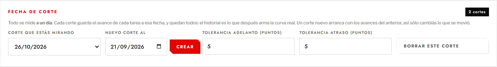
Lo que se carga
- Inicio real de cada tarea, cuando arranca.
- Avance al corte, en porcentaje.
- Fin real, cuando termina.
Con eso la app calcula el fin esperado al ritmo que viene la tarea: si lleva 10 días hábiles y va por el 40%, dura 25. Las que no arrancaron se proyectan desde que terminan las que las preceden, así sale el fin esperado de toda la obra.
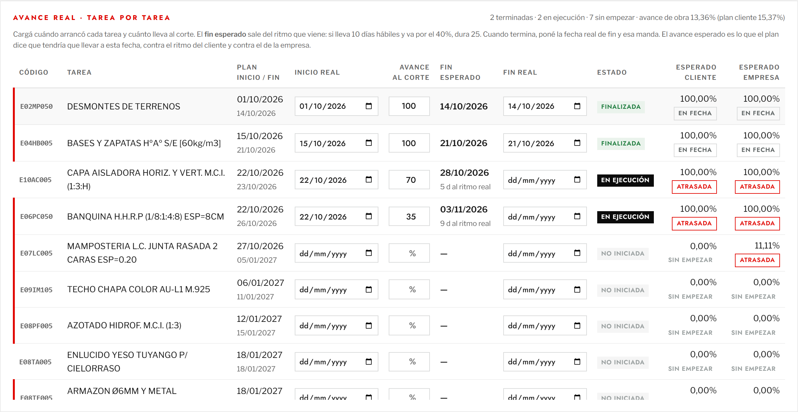
Las que todavía no arrancaron también se evalúan, como si empezaran hoy con avance cero: si según el plan ya tendrían que estar en marcha, figuran atrasadas con los días que llevan sin empezar; si todavía no les toca, en fecha. Y si lo que las precede viene atrasado, avisa cuándo arrancarían.
Cuidado con los avances chicos. El fin esperado sale de una regla de tres: una tarea que lleva 20 días al 2% “dura” mil días, y corre el final de toda la obra. Casi siempre es un avance mal escrito —0,5 queriendo decir 50—. El avance va en porcentaje, de 0 a 100. Cuando la duración estimada pasa tres veces la del plan, la fila muestra un aviso en rojo.
Las curvas
En plata. La del cliente va a precio (costo × K, sin IVA), que es lo que se certifica, y termina en el precio de la obra. La de la empresa va a costo, con su ritmo más rápido, y termina antes y más abajo, en el costo. La real y la proyectada van a costo, para compararlas con la de la empresa: la real va llena hasta el corte y la proyectada, punteada, sigue hasta el fin esperado.
Cómo leerla: si la proyectada va por debajo de la curva de la empresa y termina después, la obra viene atrasada contra el plan interno. Si además termina después de la del cliente, se pasa del plazo del contrato. Sin avance cargado, la proyectada coincide con la de la empresa.
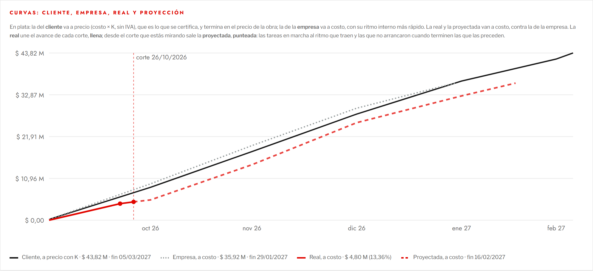
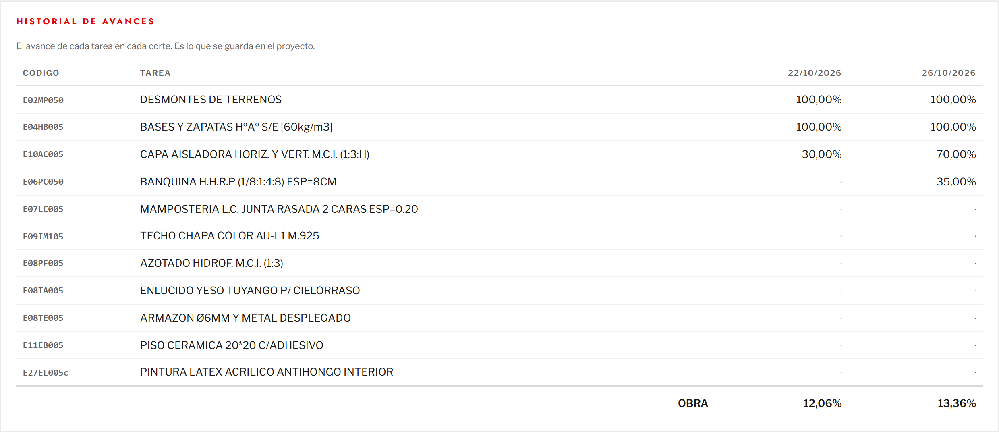
Bajar el proyecto y seguir el mes que viene
Bajar el proyecto guarda todo en un solo archivo: el cómputo, tus precios, el K, los rendimientos, las predecesoras, el calendario, los inicios y fines reales y el historial de cortes. El mes que viene lo subís con Subir un proyecto, creás el corte nuevo y seguís donde quedaste.
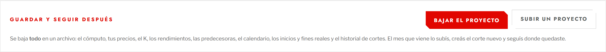
Guardá el archivo en un lugar seguro después de cada corte. Lo que está en el navegador se pierde si se borran los datos de navegación.
En el teléfono
La app anda en el celular: las pestañas se acomodan y las tablas se desplazan de costado.
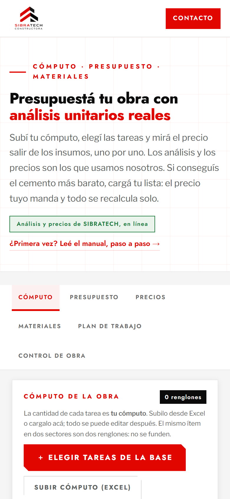